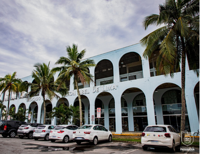
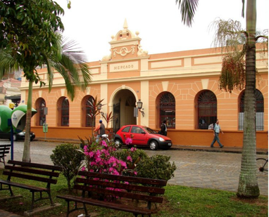

Mercado Municipal de Artesanato
Construção em estilo neo-renascentista, era o antigo mercado de peixes da cidade e servia à comunidade dos pescadores que ali vinham comercializar os seus pescados. Funcionava sempre de madrugada e ao anoitecer. Foi recuperado para servir como ponto de venda do artesanato típico da região.
Fonte: Secretária Municipal de Cultura e Turismo de Paranaguá
Mercado Municipal de Paranaguá
Inaugurado em 29 de Julho de 2009, em comemoração aos 361 anos de Paranaguá. Possui no térreo vários boxes onde são comercializados os artesanatos da região, hortaliças, frutas, grãos e especiaria. No piso superior estão os restaurantes que servem frutos do mar e comida variada e uma floricultura.
Fonte: Secretária Municipal de Cultura e Turismo de Paranaguá
Mercado Municipal do Café
O Mercado Municipal do Café é um dos pontos gastronômicos tradicionais da cidade de Paranaguá, com restaurantes que servem refeições a base de frutos do mar e comida típica, e lanchonetes que oferecem pastéis e banana recheada fritos na hora, além de outros salgados e porções.
Fonte: Secretária Municipal de Cultura e Turismo de Paranaguá